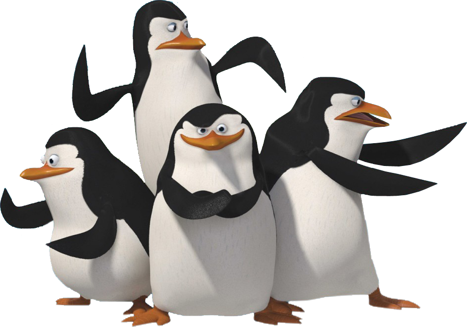

Los intrépidos y valerosos pingüinos, Skipper, Kowalski, Rico y Private (llamado Cabo en la traducción), regresan a la acción y ahora deben unir sus fuerzas con la organización secreta de espionaje de la más alta tecnología y elegancia de Ráfaga Polar, liderada por el lobo "Clasificado" y su equipo, Eva, el cerebro, Montaña, la fuerza y Mecha Corta, la foca experta en explosivos y demoliciones, para detener los diabólicos planes del malvado Dave el pulpo que se puede transformar en una persona, el Dr. Octavio Salitre, de convertir a los pingüinos en monstruos horripilantes debido a experiencias que paso cuando llegaron los cuatro intrépidos pingüinos al zoológico de Central Park en Nueva York cuando todos lo olvidaron debido a su llegada.
